推荐系统
《推荐系统从入门到实战》学习笔记
https://www.bilibili.com/video/av200358253
推荐系统定义
推荐系统
定义：根据用户的历史信息和行为，向用户推荐他感兴趣的内容
基于行为的协同过滤
基于内容的相似推荐
推荐系统解决的问题
- 信息过载
- 挖掘长尾
- 用户体验
推荐系统环节
低延迟 50ms\~300ms
推荐系统环节：
输入 -> 召回 -> 排序 -> 调整 -> 输出 数据量 百万 万 千 百
-
召回：
-
协同过滤召回
- 内容相似召回
- 图算法召回
- 热门召回
-
新课召回
... -
排序
-
机器学习-二分类算法
- LR
- GBDT
- DNN
-
Wide&Deep
-
调整
-
去重
- 已购/已读过滤
- 在线过滤
- 热门补足
- 分页提取
- 合并内容信息
推荐系统召回路径
i2i u2i u2i2i u2u2i u2tag2i
Netflix 经典推荐系统架构
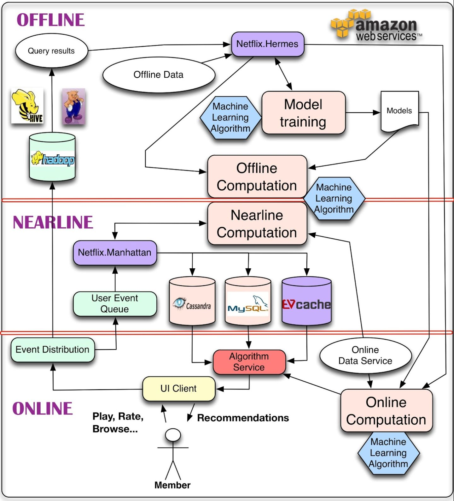
既能够处理海量数据，又能及时响应用户交互
- 在线层 200ms
- 近线层 10s
- 离线层 天粒度
推荐系统技术架构
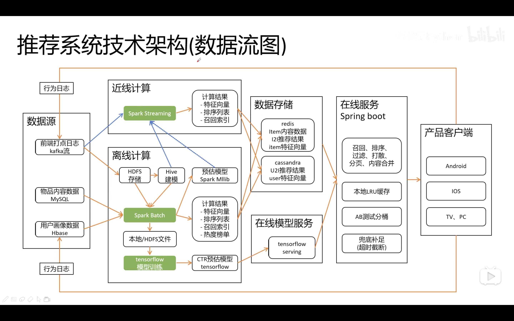
基于内容的推荐系统
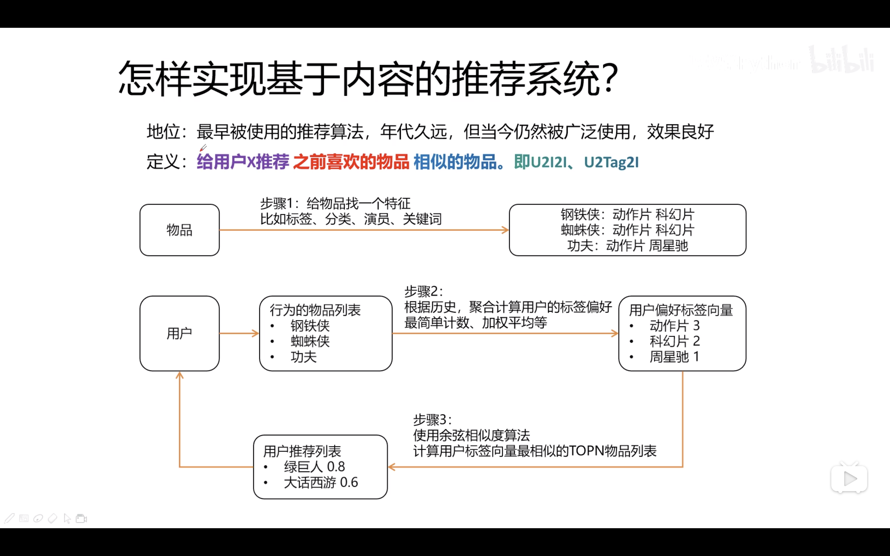
基于协同过滤的推荐系统
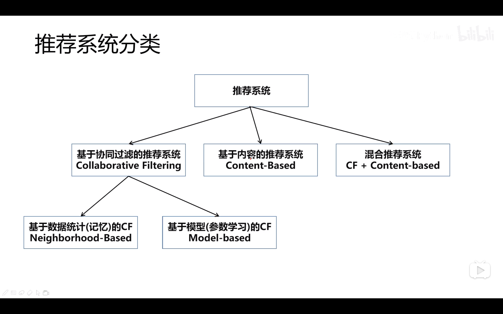
集体智慧
- 基于用户的协同过滤
- 基于物品的协同过滤
相似度计算方法
- Jaccard 相似度
- 余弦相似度
- 皮尔逊相关系数
多路召回融合排序
TopN
融合方法
- 按顺序展示
- 平均法
- 加权平均
- 动态加权法
- 机器学习权重法
AB 测试
数据驱动
实现内容相似推荐
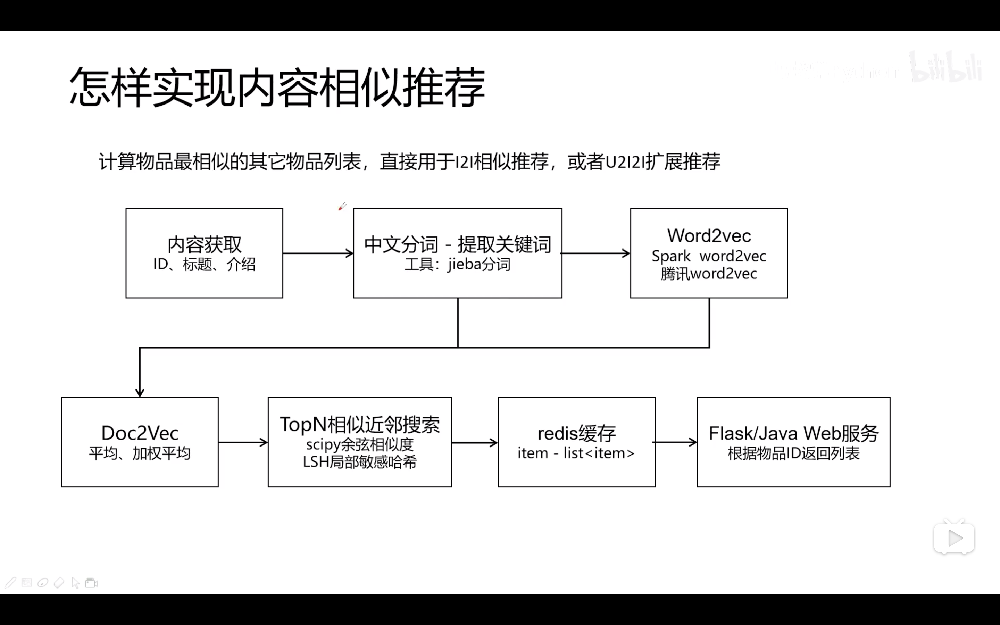
实现用户聚类推荐
群聚分析
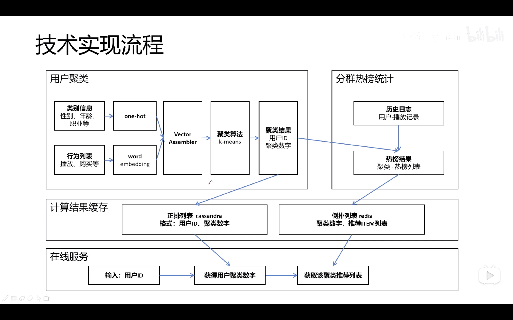
实现矩阵分解推荐
降维
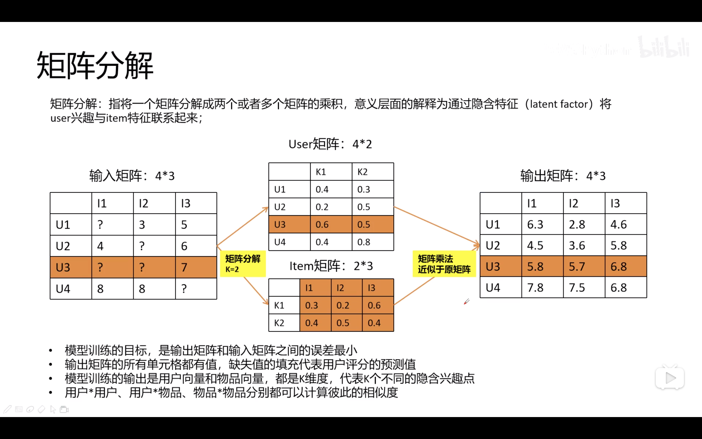
推荐系统 API 服务接口
猜你喜欢
相关推荐
物品冷启动
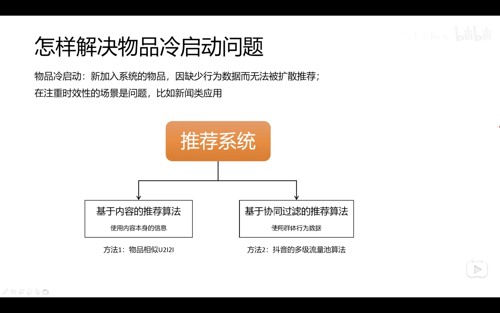
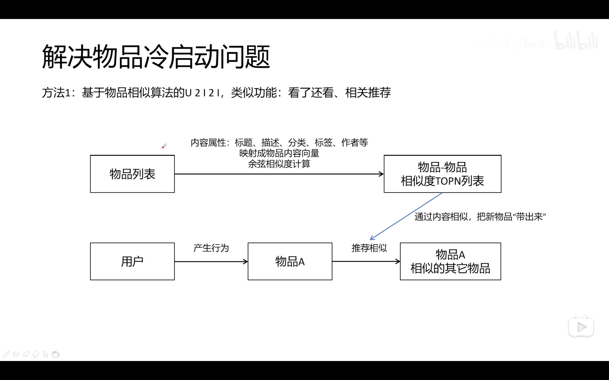
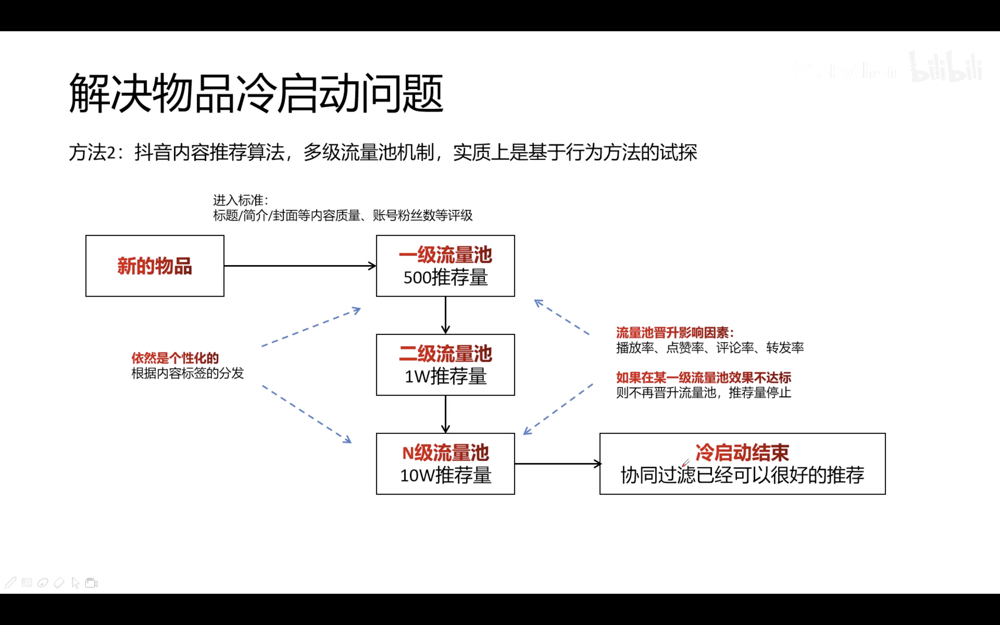
Embedding 技术
直观上，是一个数组，元素是一个小数数字
物理意义上，每个小数代表一个兴趣强度
faiss 近邻搜索库
推荐系统依赖数据源与特征工程
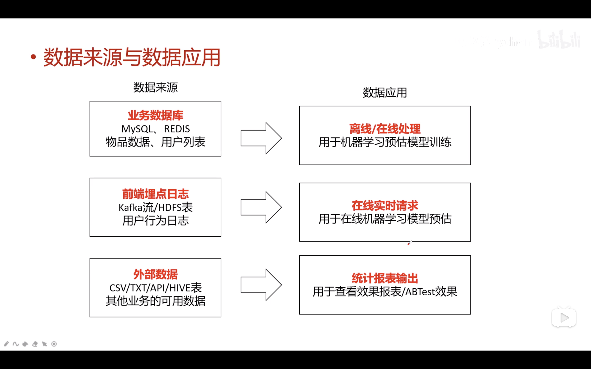
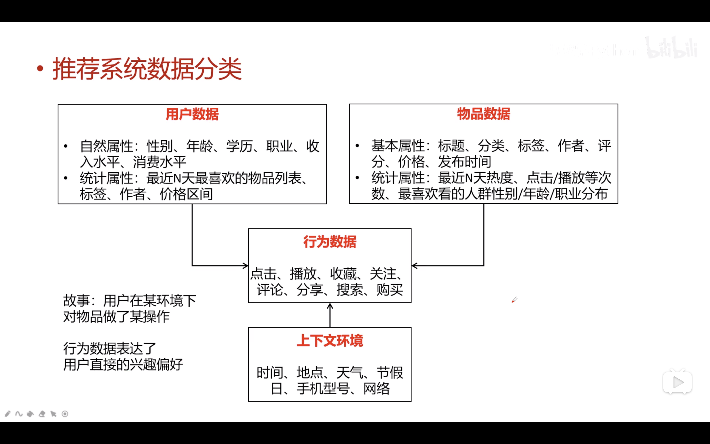
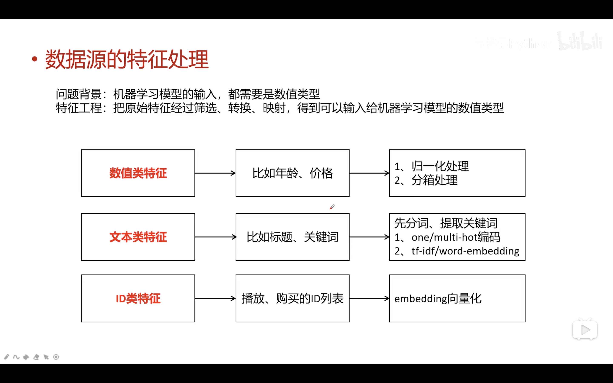
环境
Python
numpy
pandas
pyspark
flask
scipy